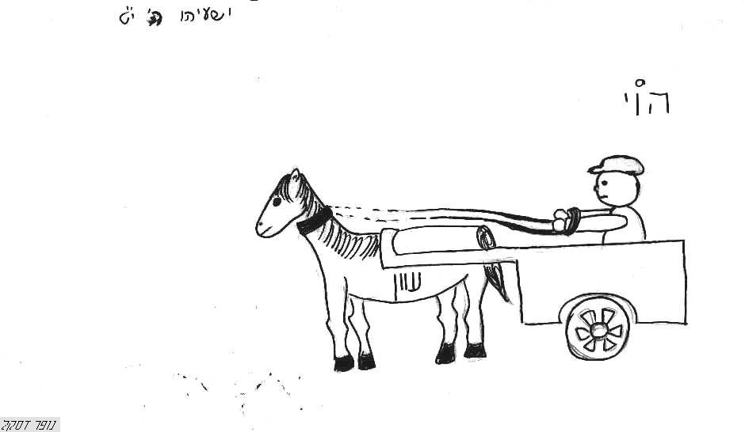

מבנים פשוטים ואדריכליים
קוד: אדריכלות בתנ"ך
סוג: רבשורש
מאת:
אל:
אהל מועד
אוהל
אולם
אומנוֹת
אֲוֵרָה
אושיות
אַיִל4
אֵלָם
אֳני
אֳניה

אסָם
- [רק בריבוי "אסמים"][שבי"ל]
אפריון
- = היכל[שבי"ל]
ארובה
אֻרוָה
אֻריָה
ארמון
אשמנים
- = הבור שמשימין שם האשמים ומחויבי עונש[שבי"ל]
אשנָב
- = חלון[שבי"ל]
אתיק
- = על משקל "אדיר"[שבי"ל]
- [באה רק בספר יחזקאל]/ מוטי אהרוני (MOTI_AHARONI @ WALLA.CO.IL) -> האתר
באֵר
בֹאר
- = א' תחת ו'[שבי"ל]
בֶאֱרֹת
בוֹר
- = מקום חפור בארץ[שבי"ל]
 -> תקרת קניון קסטרא")
- בור - דות/ אראל
- דותן = בור/ אביתר כהן
- לחפש מתחת לפנס/ אראל
בַחוּן
בַחַן
- = מגדול או מבצר[שבי"ל]
בַיִר
בירה
בירנית
ביִת
בית כלא
- = בית אסורים[שבי"ל]
בית רשע
ביתן
במָה
- = מקום גבוה, ועל הרוב הוא להקרבת קרבן[שבי"ל]
במת
- [רק בריבוי "במתי"][שבי"ל]
ברֵכָה
גָג
- = כיסוי הבתים ממעל[שבי"ל]
 -> תקרת קניון קסטרא")
- שב יא 2/ סיגל (צילמה) -> תקרת קניון קסטרא
גֶדֶר
- = קיר עץ ואבן[שבי"ל]
גָדֵר
גומץ
- = בור ושוחה[שבי"ל]
גורן
- = מקום פנוי מוכן לתבואה למלאכתה[שבי"ל]
גלילים
- = עמודים עגולים[שבי"ל]
גנזכים
גַת
דביר
דוברות
- = עצים הקשורים יחד, ומנהיגים אותן על פני המים[שבי"ל]
דָיֵק
- = מגדל שבונים נגד העיר לכבשה[שבי"ל]
דלֶת
- = העשוי לסתום פתח הבית[שבי"ל]
- [זכר ונקבה בפסוק אחד]/ מוטי אהרוני -> האתר
- מש כו 14/ חני סגל
הַגְּדֶרֶת
הדוּרים
- = כינוי לערי מבצר, כי החומות והמגדלים הם הדר העיר ותפארתה[שבי"ל]
היכל
- = ארמון ומקדש מלך[שבי"ל]
הָעִיר
הרמון
זבול
- = מעון ודירה[שבי"ל]
זוית
- [רק ברבים "זויות"][שבי"ל]
חִבֵּל4
- = תורֵן הספינה, הקשור בחבלים [על משקל "כִסֵּא", "עִוֵּר"][שבי"ל]
חדֶר
- = תא הבית[שבי"ל]
חַוָּה
- = רק ברבים "חוות"[שבי"ל]
- בשן = ארגוב = חות יאיר = נחש/ אביתר כהן
חומה
חופה
- = שם סוכת כבוד[שבי"ל]
חוצות
- = נרדף לשווקים ורחובות[שבי"ל]
חֵיל
חֵל5
- = חפירה[שבי"ל]
חלון
- = חלל הבית לצוהר[שבי"ל]
- זכוכית, חול/ אביתר כהן
חנוּת
- = בית חניה לאסורים [רק ברבים "חנויות"][שבי"ל]
חצֵר
טוּר
- = שורה[שבי"ל]
טירה1
- [רק בריבוי "טירות"][שבי"ל]
טירה2
טְפָחות
יסוד
- = בסיס, או [דבר] העומד קיים[שבי"ל]
יציע
- = תא וצלע בבנין הבית, שאחד מצע לחברו שעל-גבו, והשלישית ע"ש השנים[שבי"ל]
- [באה רק בספר מלכים א]/ מוטי אהרוני (MOTI_AHARONI @ WALLA.CO.IL)
יקֶב
- = הבור שלפני הגת שהיין יורד לתוכו, רש"י[שבי"ל]
כותל
- = קיר[שבי"ל]
כותרת
- = נזר לעמוּד[שבי"ל]
כלוּא
- = על-משקל "זבול"[שבי"ל]
- [באה רק בספר ירמיהו]/ מוטי אהרוני (MOTI_AHARONI @ WALLA.CO.IL) -> האתר
כְפַר
כֹפֶר4
לולים
לשכה
- = חדר[שבי"ל]
מאבוס
- = אוצרות התבואה, שמתפטמים ומתדשנים בהם[שבי"ל]
מגדל
- = בנין גבוה[שבי"ל]
- ציורים מגילות 1
מגוּר
- = מקום דירה[שבי"ל]
מגוּרה
- = מקום חניית התבואה[שבי"ל]
מדינה
מדרגה
- = לדעת תרגום יונתן הוא מגדל, וע' רש"י[שבי"ל]
מהפכת
- = בית האסורים[שבי"ל]
מְזָוֶה
- = פינה וזוית בפנים הבית [רק ברבים "מזווינו"][שבי"ל]
מזוזה
- = לחי השער והפתח[שבי"ל]
מחילה
- = מערה חלולה[שבי"ל]
מכון
מִכְלָה
- = דיר הצאן, שהם כלואים שם, וה' תחת א'[שבי"ל]
מכמן
- [רק ברבים "מכמנים"][שבי"ל]
מלבן
- = מקום מעשה לבנים[שבי"ל]
מלונה
- = "מלון" בלשון נקבה, למלון שומר הגן[שבי"ל]
- [באה רק בספר ישעיהו]/ מוטי אהרוני (MOTI_AHARONI @ WALLA.CO.IL) -> האתר
מלתחה
- = אוצר הבגדים[שבי"ל]
ממגורה
- [רק בריבוי "ממגורות"][שבי"ל]
מנהרה
- = "מטמוריתא", שבהם מאור קטן[שבי"ל]
מסד
מסדרון
- = אכסדרה[שבי"ל]
מסכנוֹת
- = אוצרות התבואה [ע' רש"י דה"ב לב], שמקמצין אותה בשני השבע למען תהיה לשנות הרעבון והחוסר[שבי"ל]
- בוקע עצים - ייסכן בם/ אראל
מעגל1
- = ת"י "כרקומא", שעושין באנשי חיל סביב והיקף דבר לשמירה[שבי"ל]
- מעגלים ישרים?/ אראל
מעוֹנָה
- = "מעון" בלשון נקבה[שבי"ל]
מעִי
- = המ"ם נוסף, ראב"ע ישעיהו יז1[שבי"ל]
מעקה
- = גדר נמוך וסיג סביב הגג[שבי"ל]
מְעָרָה
מַעֲרֶה
- = "מְעָרָה" בלשון זכר, כמו "מקנָה"-"מקנֶה השדה"[שבי"ל]
מפתָן
- = נרדף ל"סף"[שבי"ל]
מצָד
מצוּדה
מִצְפֶה
- = מקום גבוה, שעליו עומד הצופה או המצפה[שבי"ל]
מקֵרָה
- = בית הקיץ, עשוי חלונות חלונות, שישב בו רוח לקרר, ות"י "בית קיטא"[שבי"ל]
- [באה רק בספר שופטים]/ מוטי אהרוני (MOTI_AHARONI @ WALLA.CO.IL)
מרכבה
משקוף
- = חלון שעל הפתח, ראב"ע, וע' רש"י[שבי"ל]
- [באה רק בספר שמות]/ מוטי אהרוני (MOTI_AHARONI @ WALLA.CO.IL) -> האתר
נוה צדיק
נשכה
סֹהַר
- = בית האסורים[שבי"ל]
- [באה רק בספר בראשית]/ מוטי אהרוני (MOTI_AHARONI @ WALLA.CO.IL) -> האתר
סוללה
סירה

{kind=link}
{kind=link}
{kind=link}
{kind=link}
סֹך
- אוהל קל הסוכך [רק בשייכות - "סֻכּוֹ"][שבי"ל]
סֻכָּה
ספינה
- = מקום מכוסה באניה[שבי"ל]
עבָרָה
- = ספינה, לעבור המים[שבי"ל]
עֲגָלָה
- = מרכבה, שאופניה עגולים[שבי"ל]
- 
{kind=link}
עופל
- = מבצר גבוה[שבי"ל]
עֲזָרָה1
- = חצר בית המקדש, שנעזרים בה בהתפללם שם[שבי"ל]
עֲזָרָה2
- = כניסת המזבח[שבי"ל]
עִי
עִיר
עיר בצורה
עליה[ע]
- = חדר אשר על הבית[שבי"ל]
עמוד
- = שהוא עומד הכן[שבי"ל]
 -> תקרת קניון קסטרא")
- עמודי הנחושת יכין ובועז/ אביתר כהן
פרבָר
- = לול קטן כו', זבחים נה[שבי"ל]
צִי
ציוּן
- = בניין עשוי לאות ולזיכרון[שבי"ל]
צִים
צינוק
- = כלי מסגר[שבי"ל]
צפֶת
- = ציפוי כמו כותרת[שבי"ל]
צריח
- = בנין גבוה, שבו קול דממה כקול רם יישמע[שבי"ל]
קֻבָּה
- = שם על-משקל "סֻלם", וע' שורש פקה. והוא חדר קטן פנימי לשכב שם[שבי"ל]
קבורה
- = "קבר" בלשון נקבה"[שבי"ל]
קבֶר
- = מקום לקבור בו[שבי"ל]
קברות
- = "קברים" בלשון נקבה[שבי"ל]
קברים
קִיר
- = כותל[שבי"ל]
קֵן
קריה
קריות
קרת
- = כמו קריה, ולרש"י הוא מענין קרה1 - תקרה גבוה למושב זקנים[שבי"ל]
רחוב
- = שוק העיר, שהוא במקום רחב[שבי"ל]
- הסכנות בחוץ וברחובות/ אראל ע"פ הגר"א
- חשיבות היציאה להפגנות/ אראל
רכֶב
- = נרדף לפרש, ובא גם לאבן העליונה משתי אבני הריחיים[שבי"ל]
רָמָה
- = נרדף לגב, כמו בימוס ומזבח[שבי"ל]
- [באה רק בספר יחזקאל]/ מוטי אהרוני (MOTI_AHARONI @ WALLA.CO.IL) -> האתר
רפסודה
- [רק בריבוי "רפסודות"][שבי"ל]
רפֶת
- [רק בריבוי "רפתים"][שבי"ל]
רצפה1
- = קרקעית הבית, הרצופה באבנים[שבי"ל]
שוחה
שוּק
שוּר2
- = חומה[שבי"ל]
שורה
שיחה
שֹׂך
- [רק בשייכות - "שֻׂכּוֹ"][שבי"ל]
שֻׂכָּה
שַעַר
שפריר
- = אוהל נעים ונאה[שבי"ל]
תָא
- = חדר או לשכה[שבי"ל]
תֵבָה
- = ספינה[שבי"ל]
תלפיות
- = בית נשק, שתולים בו כלי זין וחרב פיפיות[שבי"ל]